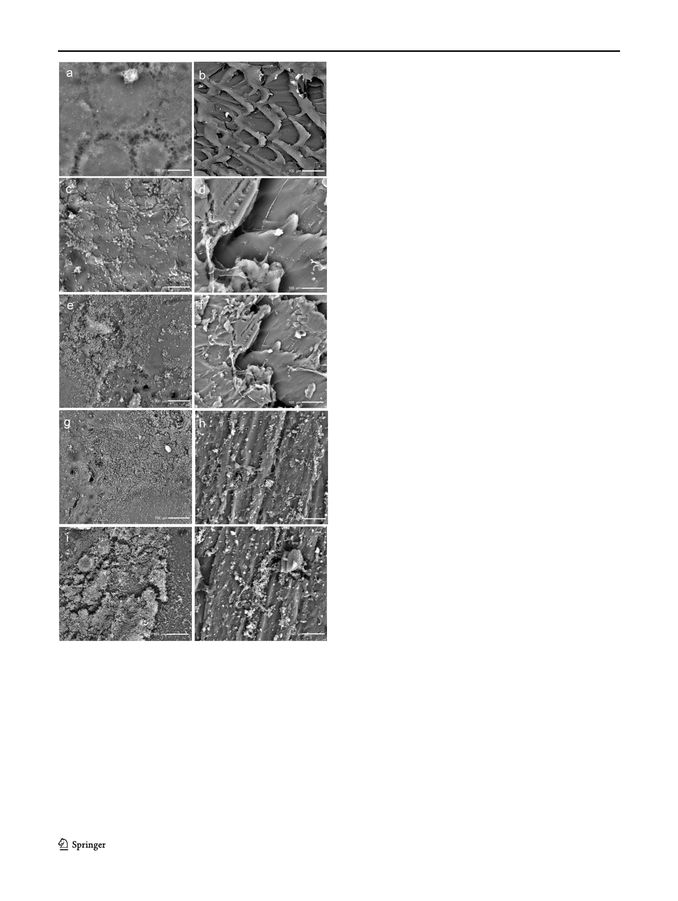

622
Braz J Microbiol (2021) 52:619–625
AuNP coating effect on the morphology of the biofilm
of S. aureus with SEM
At 6 h in the control group, the uniform base layer was ob-
served, which corresponds to the primary phases of settlement
of the biofilm (Fig. 2a). In contrast, in the experimental group
of specimens with AuNP, no primary settlements were ob-
served, the base layer or conglomerates were unable to be
seen, and the bacteria were very scarce and were distributed
in isolation or in pairs (Fig. 2b).
At 12 h of the incubation time, localized clusters of low
growth were observed in clusters or groups (Fig. 2c) and, in
the experimental group, the formation of a dense base layer
was observed (Fig. 2d). At 24 h, higher conglomerates of
developing bacteria were observed (Fig. 2e), while in the ex-
perimental group, the beginning of an isolated and localized
primary settlement phase was observed (Fig. 2f).
At 48 h, a large number of bacteria were observed that
completely covered the surface in the control group (Fig.
2g), while in the experimental group, in the images obtained
with SEM, numerous clustered bacteria were observed. These
were deposited in areas of greater porosity or where, presum-
ably, the Au layer was not uniform or did not coat the surface
(Fig. 2h).
In the last period of evaluation, at 72 h in the control group,
there was biofilm growth on the total surface of the PE spec-
imens (Fig. 2i), while in the experimental group, it was ob-
served that greatest growth occurred in the retentive areas of
the surface of the PE specimens (Fig. 2j).
The dynamics of biofilm formation of S. aureus on uncoat-
ed PE surfaces showed an increasing trend in the quantifica-
tion of viable cells from 6 h of biofilm formation, with
sustained and constant growth until 72 h (Table 1).
Moreover, the values obtained show that the biofilm onto
the experimental surface group coated with AuNPs had a
smaller biofilm growth, although it showed a lower increase
in the evaluation times compared to the surfaces of the spec-
imens uncoated with AuNPs (Fig. 3).
Fig. 2 Images obtained with SEM of the morphology of S. aureus
biofilm on the uncoated PE surfaces at 6 h (a), 12 h (c), 24 h (e), 48 h
(g), and 72 h (i) and on the coated surface with AuNPs at 6 h (b), 12 h (d),
24 h (f), 48 h (h), and 72 h (j)
the extension of this, conglomerates were observed in the
form of dense granules, with greater extension, but spaced
further from each other (Fig. 1i). In the case of the experimen-
tal group, at 72 h, the biofilm of S. aureus decreased, as well as
the number of nonviable cells; there were a few isolated con-
glomerates (Fig. 1j).
AuNP coating effect on the viability of S. aureus
The analysis of the cell viability of the biofilm by UAF
showed a ratio of almost 4:1 viable/nonviable in the biofilm
of the uncoated surfaces, while in the biofilm of the surfaces
coated with AuNPs, the average viable/nonviable ratio is of
1:1, which indicates that cells that developed in the biofilm
lost viability affected by the AuNPs (Table 1). The CFU count
of the cells recovered from the biofilm at 72 h was 10.941759
Log10 for the control group compared to the surfaces of the
specimens uncoated with AuNPs with 5.562292 Log10.